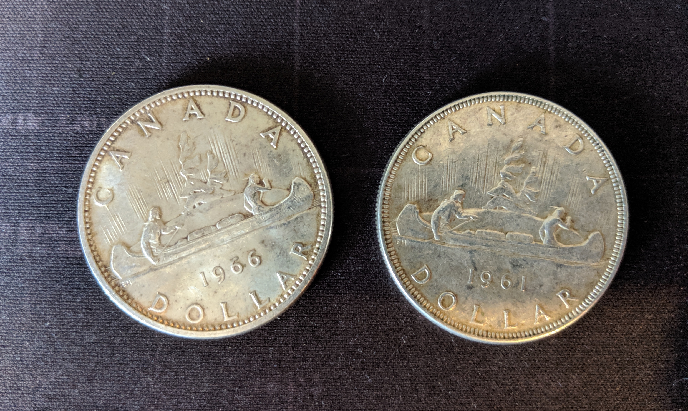

My Wedding Ring is a Dollar
Turning a 1961 Canadian silver dollar into a wedding band - with no experience and minimal tools
July 30, 2019 •6 min read • DIY - Metal-work , Home , Wedding
As those of you that know me likely know, Emma and I have been hard at work preparing for our wedding. It is now officially less than one month away, which means time to pull up the bootstraps and get everything done! We got Emma’s wedding band almost a month ago. It was made to match by Allyson Simmie, the same artisan from Nova Scotia that made her engagement ring. My wedding band, on the other hand, was a to-do list item that had yet to be checked off. It’s not that I had completely forgotten about it so much as that I couldn’t make up my mind. I wanted something simple, if not a little rough - I didn’t particularly want to buy some ring from a big retail jewellery store, and most artist/artisan’s rings were a bit out of my budget. This matter was only made worse when I was looking around some stores in Hamilton the other week with my friend Jeff, and realized almost no stores had any rings in my size anyway and it took up to 6 weeks to order them in. After stewing further, and finding some inspiring posts on r/DIY I decided to make one myself! Before going out to buy a crucible, torch and molding-sand - I figured I’d give hammering one a try. A day and a half and one failed attempt later, I’m actually pretty darn happy with how it turned out! But enough with all the chit-chat here’s how I made it:
Silver interestingly enough refers to Sterling Silver as opposed to Fine Silver - Fine Silver had a purity of 99.9% silver and is simply too soft to be used for jewellery. Sterling Silver, on the other hand, is an alloy created from silver and copper, usually containing above 90% silver. Finally COIN silver for both economic and density reasons refers to Silver/Copper alloys with a purity of 80% or higher. For this project, I was looking for either Coin Silver or Sterling Silver. Turns out Canadian silver dollars before 1967 have 80% purity of silver1 which was exactly what I needed, so off I went in search of a Canadian silver dollar. After a couple hours and quite the hunt around Guelph, I bought one from a guy who coincidentally was going around to pawn shops at the exact same time trying to SELL a couple of silver dollars. Thankfully I got two, cause the first attempt did not quite work out as planned. I’ll conveniently skip over that whole debacle and only show the pretty one that worked out, this IS the internet of course.


Next I pulled out my calipers, measured the coins and locked the calipers onto half their diameter, and measured lines from a few edge points until they formed an intersection at the exact center of the coin. I also learned from my last failed ring, that a whole silver dollar is simply too much metal - my last one started to crack before I was able to get it small enough. So with that in mind, I set my calipers to a few millimeters and scored a circle around the coin to mark what I was to remove.
I kicked myself for not buying a proper angle grinder or bench grinder earlier on this step. To make the cuts, I drilled a small hole into the coin (first using an impact nail to make a nice spot to seat my drill-bit) and screwed it down to some scrap-wood. Pure silver has a density of 10.49 g/cm3, ergo, its pretty damn soft - so I was pleasantly surprised by how easily it was to cut, sand and form. My hacksaw made quick, if not a bit rough, work of the coin.
Obviously my hacksaw couldn’t cut a perfect circle, but because my hold was perfectly center, and my score lines for my aimed circumference were still visible, I was able to sand it down to size fairly accurately. Without a proper bench-grinder, I opted to put my orbital palm sander with 50-grit course paper into my vice. A tad sketchy, but hot damn did it work well. Within a couple minutes I had the ring shaped into a rough circle with the right proportions.


Now for the real fun - just start wacking! The aim is not to beat the thing to death, just give it an even and consistent tap as you spin. I probably tapped this coin for about 2.5 hours total before deciding that whether or not it needed more, it was done.


I got onto a bit of a roll here and forgot to take some pictures, but I pretty much just kept hammering until the outer diameter matched my sizing ring, then drilled out the inner hole and started filing the interior until it was reasonably smooth and a bit smaller than my fit. Dont worry, it looks bad now but this is simply a crude form, it’ll start getting better I swear.


Next I put my ring onto a mandrel, and continued hammering to make sure the ring was a perfect circle. At this point, you also want to expand the ring to ever so slightly smaller than your fit. Once this is done, the ring is officially its final size.

Now just to sand and polish until your hands bleed! Get cozy, this process took me about 3 hours total. Watching the newest season of one of your shows or chilling outside with a beer and some puppers will make this process feel a whole lot quicker. I started with wet, fine sandpaper slowly working my way from 120-grit up to 1000-grit. For the final sanding I created an abrasive paste using baking soda and water. Then as a finish touch, I grabbed a shammy and rubbed the ring down with silver polish.


And look at that! Only 8-10 hours of work, 1 failed attempt, a workshop full of tools, and metric butt-tonne of elbow grease later - I’ve got a wedding ring! Simple!


1 - Canadian Nickels and Dimes from around the same era will also work, but you get extra swag points for using a silver dollar
← Article Index | Next Article: